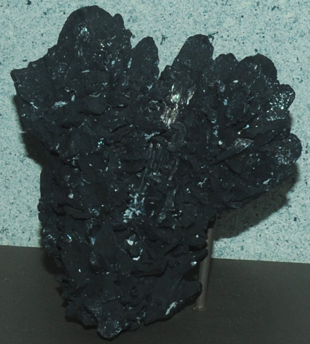

|

| Ag3AsS3
This sample of proustite is displayed in the Smithsonian Museum of Natural History. Proustite is a sulfide mineral of silver and arsenic with the composition Ag3AsS3. The sample at left is about 10 cm across and is from Chanarcillo, Atacama, Chile.
|